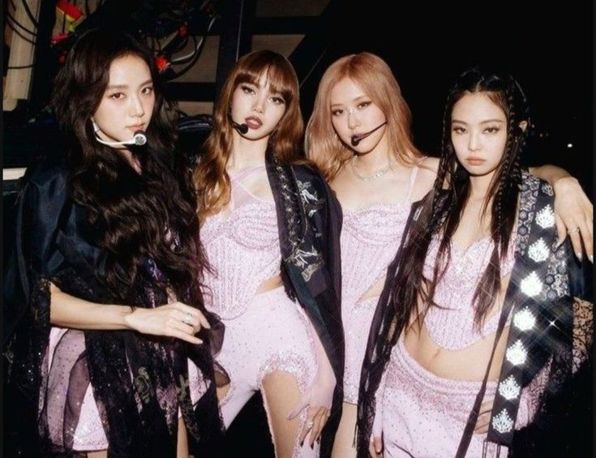
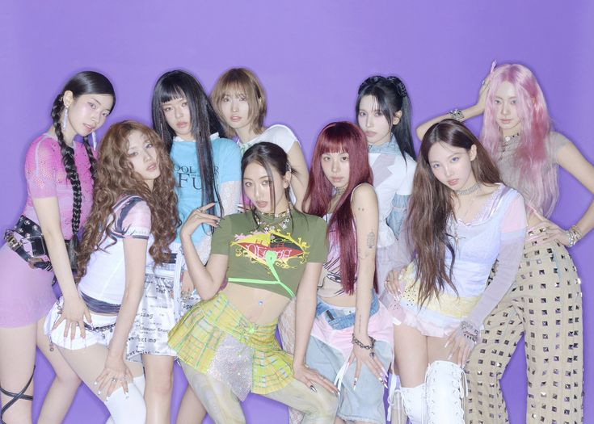

Легенды 2-го и 3-го поколения
BTS (Bangtan Sonyeondan)
Группа, изменившая правила игры. Своими искренними текстами на социальные темы они нашли отклик у молодежи по всему миру.
BLACKPINK
Группа, несущая философию «girl crush». Их стиль — смесь элегантной роскоши и мощной энергии.
TWICE
TWICE стали королевами яркого, «цепляющего» K-Pop. Их ранние хиты называют национальным достоянием Южной Кореи из-за их популярности.
